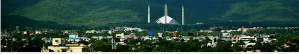
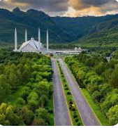

ISLAMABAD
ISLAMABAD

Islamabad the Federal capital city of Pakistan.
The city is located on the Pothohar Plateau in the northwest of the country.
It is in the Islamabad Capital Territory, though the area has historically
been a part of the Pothohar region on the crossroads of the Punjab region and
the Khyber Pakhtunkhwa province (the Margalla Pass being a historic gateway to
the Khyber Pakhtunkhwa, and the Pothohar Plateau historically is a part of the
Punjab region). This city is rich in nature. It is surrounded by the Margalla
Hills. It has a humid subtropical climate (Cwa in the Köppen climate
classification). Islamabad an expensive city to live in as the prices
of most of fruits, vegetable and poultry items increased in Islamabad during the
years 2015-2020.
The places that attract the tourists include:
- Shah Faisal Mosqu
e
- Daman-e-Koh
- Gurdwara Baba Dyall Singh
- Peer Sohawa
- Gurdwara Guru Ravidas
- Fateh Tower
- Vishnu temple
- Shakar Parian
- Fatimah Jinnah Park
- Rose and Jasmine Garden
- Pakistan National Monument
- Rawal Lake (and Rawal Dam)
- Japanese Park
- Marghazar Zoo
- National Archives of Pakistan
Faisal Mosque is the national mosque of
Pakistan ,
located in islamabad the capital of the country.
It is the sixth-largest mosque in the world, the largest mosque outside the
Middle East, and the largest within South Asia, located on the foothills of
Margalla Hills. It is named after the late King Faisal of Saudi Arabia
(r. 1964–75). Designed by Turkish architect Vedat Dalokay, the mosque features
a contemporary design consisting of eight sides of concrete shell and is inspired
by the design of a typical Bedouin tent.
Construction of the mosque began in 1976 after a $28 million
grant from Saudi King
Faisal, whose name the mosque bears. The unconventional design by Turkish architect
Vedat Dalokay was selected after an international competition. Without a typical dome,
the mosque is shaped like a Bedouin tent, surrounded by four 90 metres (300 ft) tall
minarets. The design features eight-sided shell shaped sloping roofs forming a triangular
\worship hall which can hold 10,000 worshippers.